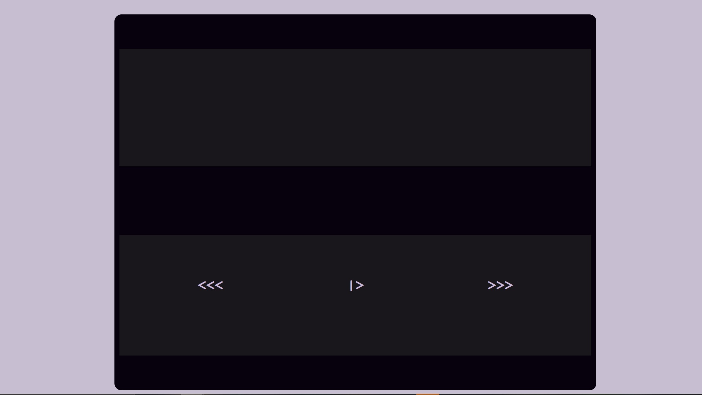

I took this course after getting a job as a UI/UX designer and used the opportunity to improve upon the skills that I already knew and regularly used at work. I was able to expand upon my knowledge of JSON files and JavaScript. There were several assignments, especially those surrounding Vue, that I found especially difficult. I enjoy being pushed to the edge of my knowledge, especially when it comes to web design. It was rewarding to be able to log in to work each day and be able to implement something new and interesting in a real environment. We spent lots of time in this course getting JavaScript, HTML, and CSS to better communicate to create a more cohesive and interactive experience. This ended up being something that I used very often at work to great effect.
If I had to choose just one favorite project from this class, I’d say it was the Juebox app. Click the image above to use it in your own browser! I’ve had the opportunity to make many web music players over the years, both for fun and for school. I think this was my best attempt yet and only possible due to what we learned throughout this course about structuring data for JavaScript. The end result is something that I feel looks and functions very cleanly and love to show off as one of the highlights of my New Media experience. It was really fun and rewarding to be able to attempt something I’d tried so many times before, but this time be armed with the knowledge to pull it off properly.